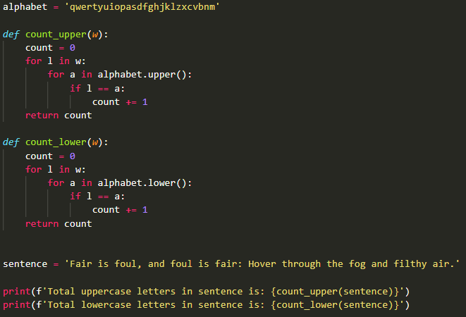

1
Большие и маленькие буквы
легкоавтопроверка
Создай программу, которая считает количество больших и маленьких букв в предложении 'Fair is foul, and foul is fair: Hover through the fog and filthy air.'
Подсказка
Пригодятся методы .isupper() и .islower().
Показать ответ (сначала попробуй сам!)
